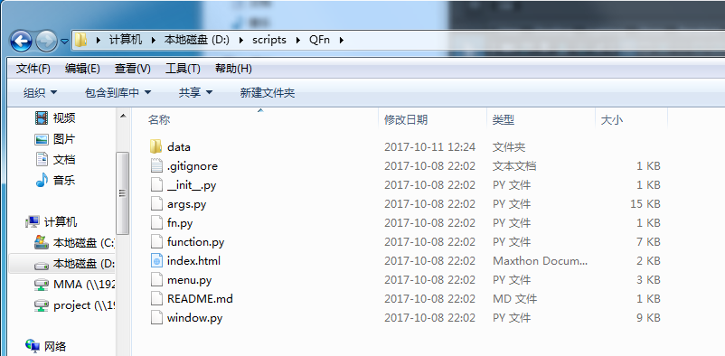

如果缺少yaml或PySide需额外的安装。 打开下载地址，下载压缩包。将QFn包解压到需要的位置。 以解压到D:/scripts为例，运行案例中的代码，来导入和使用QFn。

# coding:utf-8 import sys if "D:/scripts" not in sys.path: sys.path.append("D:/scripts") #将QFn所在文件夹爱添加到python系统路径。 import QFn #导入包